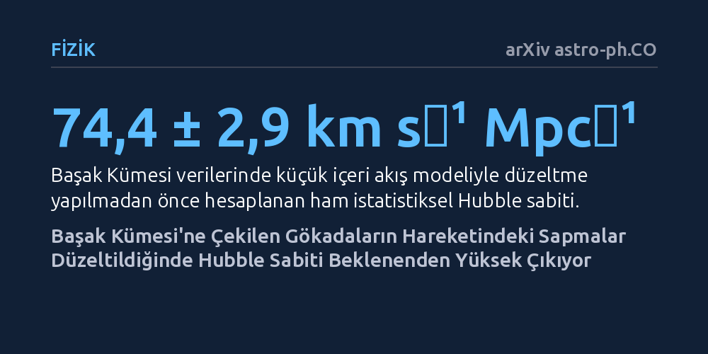

FIZIK · arXiv astro-ph.CO · 2026-10-10
Araştırmacılar, Başak Kümesi çevresindeki gökadaların içeri düşüş hareketlerini kozmolojik simülasyonlarla modelleyerek Hubble sabitinin geleneksel yöntemlerle ne kadar doğru ölçülebildiğini inceledi. Geleneksel modellerin genişleme hızını sistematik olarak düşük gösterdiği ve simülasyon tabanlı düzeltmeler yapıldığında Hubble sabitinin 81,6 ila 87,3 km/s/Mpc düzeyine çıktığı bulundu.
Yakın gökada kümelerinin çekim etkisine dayalı evren genişleme hesaplarının bugüne kadar yöntemsel hatalar nedeniyle sistematik olarak eksik tahmin edilmiş olabileceğini gösteriyor.

Evrenin genişleme hızını belirten Hubble sabiti ($H_0$), astrofizik dünyasının en sıcak tartışma konularından biridir. Erken evrenin kozmik mikrodalga arka plan ışımasından elde edilen değerler ile yakın evrendeki gökadaların uzaklaşma hızlarına dayanan ölçümler arasında yıllardır giderilemeyen bir uyumsuzluk bulunuyor. Gökbilimciler yakın evrendeki genişleme hızını ölçerken gökadaların hızlarını inceler ve yerel çekim etkilerinden kaynaklanan özel hareketleri çoğu zaman rastgele bir gürültü sayarak ortalamasını alır.
Ancak devasa kütleli gökada kümelerinin yakınında bu varsayım geçerliliğini yitirir. Merkeze yakın gökadalar, kümenin muazzam kütleçekim potansiyeline kapılarak içeriye doğru hızla çekilir. Bu çekimsel akış rastgele bir gürültü değildir; kütleçekim yasalarıyla önceden tahmin edilip modellenebilecek bir harekettir. Ne var ki gökadaların içeri düşüş hızı ile mesafesi arasındaki ilişkiyi kurmak için geçmişte kullanılan analitik formüllerin gerçeği ne kadar yansıttığı, gelişmiş simülasyonlarla kapsamlı biçimde test edilmemişti.
Araştırmacılar, geçmiş çalışmalarda benimsenen analitik yaklaşımların doğruluğunu ve hassasiyetini sınamak için gerçeğe en yakın kozmolojik modellerden biri olan IllustrisTNG simülasyonuna başvurdu. Simülasyonda yer alan çok sayıda karanlık madde halesi incelenerek, yaygın olarak kullanılan Hubble akışı modellerinin yarattığı sapmalar ve sistematik hatalar nicel olarak ortaya kondu.
Simülasyon testleri, literatürdeki yaygın uydurma fonksiyonlarının Hubble sabitini sistematik olarak olması gerekenden daha düşük tahmin ettiğini gösterdi. Tam analitik çözümler bu yanlılığı bir miktar azaltsa da tamamen ortadan kaldıramıyordu. Bunun üzerine araştırma ekibi, doğrudan simülasyondaki haleler üzerinden kalibre edilen yeni bir kestirim yöntemi geliştirdi ve bu yöntemi bize en yakın dev yapı olan Başak (Virgo) Kümesi etrafındaki gerçek gökada gözlemlerine uyguladı. Gözlemsel veri olarak, mesafeleri güvenilir biçimde veren Kırmızı Dev Kolunun Ucu (TRGB) örneklemi kullanıldı.
Geliştirilen simülasyon düzeltmesi uygulanmadan önce, Başak Kümesi verileri geleneksel modellerle analiz edildiğinde Hubble sabiti saniyede megaparsek başına küçük içeri akış modelinde 74,4 ± 2,9 km, büyük içeri akış modelinde ise 73,4 ± 3,9 km olarak bulundu. Bu ham istatistiksel sonuçlar, yerel evrendeki diğer klasik ölçümlerle oldukça benzer görünüyordu.
Fakat IllustrisTNG haleleri üzerinden hesaplanan sistematik sapma düzeltmeleri dahil edildiğinde sonuçlar belirgin şekilde yükseldi. Küçük akış modelinde Hubble sabiti 81,6 ± 7,8 km s⁻¹ Mpc⁻¹ değerine, büyük akış modelinde ise 87,3 ± 8,8 km s⁻¹ Mpc⁻¹ değerine ulaştı. Simülasyon sentetik verileri üzerinde yapılan testler, küçük akış modelinin Başak Kümesi için en düşük sistematik sapmaya sahip model olduğunu ortaya koydu.
Çalışmadaki hata çözümlemesi, istatistiksel belirsizliklerin temel olarak modelin etrafındaki artık hız saçılmasından kaynaklandığını gösterdi. Sistematik hatalar ise gökadaların kümenin ortak hareket eden referans çerçevesine dönüştürülmesi sırasındaki kabullerden ve farklı hale popülasyonlarının çeşitliliğinden ileri geliyor.
Bu bulgular, gökada kümelerindeki çekimsel akış hareketlerini yorumlamak için çok daha sağlam bir simülasyon tabanlı zemin hazırlıyor. En önemlisi de geçmiş çalışmalarda küme hareketlerine dayalı Hubble sabiti ölçümlerinin neden ısrarla düşük çıktığını aydınlatıyor. Yerel evrendeki kütleçekimsel karmaşıklıkları doğru simülasyonlarla düzeltmek, modern kozmolojinin en büyük bilmecesi olan evrenin genişleme gerilimini çözmek için yeni bir bakış açısı sunuyor.